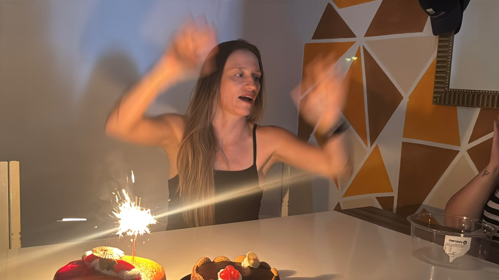
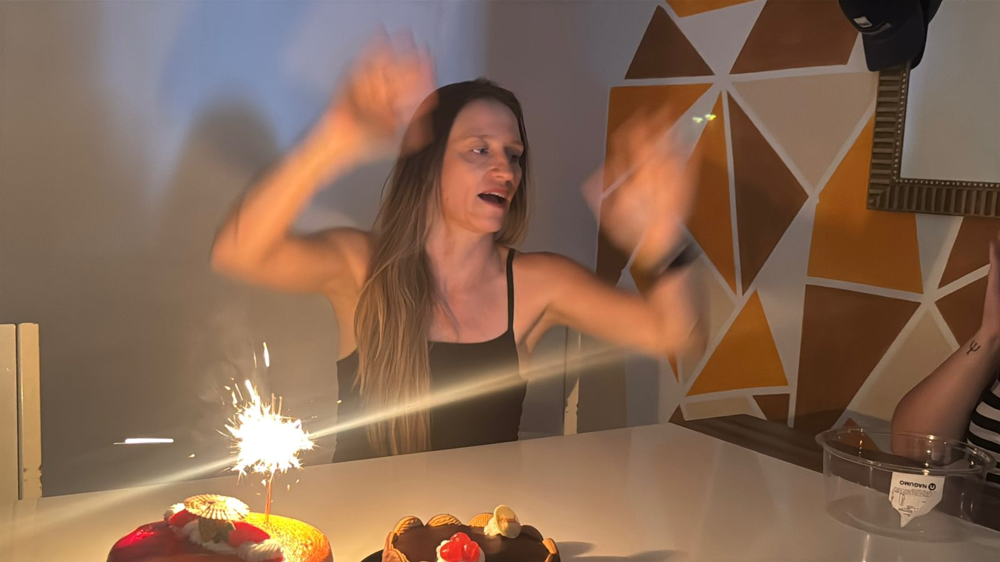

Uma Super Mulher
Cristiane é mais que uma pessoa. Ela é um pilar. Uma super irmã, filha, mãe e tia, que transforma qualquer ambiente com sua presença. Com o coração cheio de amor e uma mente afiada, ela sempre está pronta para apoiar, ouvir, aconselhar e — claro — cuidar.
No Trabalho, Uma Líder Natural
Com sua perseverança e dedicação, Cristiane é referência entre colegas. Sempre ensinando, compartilhando experiências e inspirando aqueles ao seu redor com sua responsabilidade e coragem.
A Inimiga Número 1 do Tédio
Cristiane tem o dom de transformar o ordinário em extraordinário. Se está por perto, pode apostar: vai ter passeio, risada, ideia nova e muitos momentos inesquecíveis. Estar com ela é estar em constante movimento — seja física, emocional ou espiritualmente.
Independência que Inspira
Extremamente independente, ela traça seus caminhos com firmeza e não permite que nada — ou ninguém — atrapalhe sua trajetória. Cristiane não precisa de ninguém para ser feliz, porque ela mesma é seu maior apoio.
Galeria de Momentos

 

Depoimentos
"Cristiane nos ensina todos os dias o valor de viver com propósito e de amar com intensidade."
"Ela é a energia que contagia e a presença que conforta."